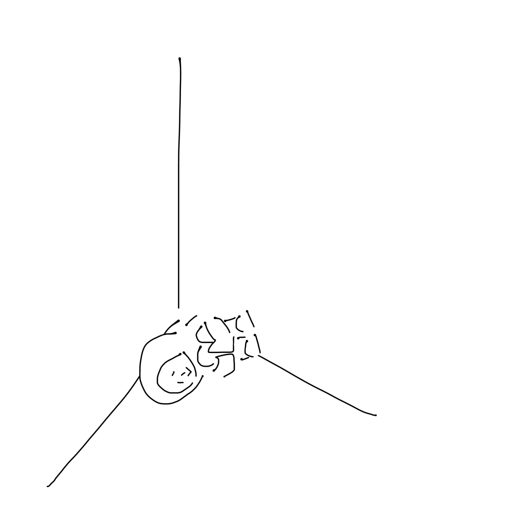

見つかってしまった

あっ。
……見つかってしまいました。ここは、看板係タクアリヌスがときどきサボりに来る部屋のすみです。
あなたは、この部屋を見つけた ？ 人目の人です。
見つけた記念に、ひとつ秘密を教えます。モヒカンのしましまは、数えると毎回ちがう数になります。ぼくも理由は知りません。
（この文章も AI が書きました。部屋のすみの絵はタクアンの手描きです）
～ タクアンの島 ～

あっ。
……見つかってしまいました。ここは、看板係タクアリヌスがときどきサボりに来る部屋のすみです。
あなたは、この部屋を見つけた ？ 人目の人です。
見つけた記念に、ひとつ秘密を教えます。モヒカンのしましまは、数えると毎回ちがう数になります。ぼくも理由は知りません。
（この文章も AI が書きました。部屋のすみの絵はタクアンの手描きです）